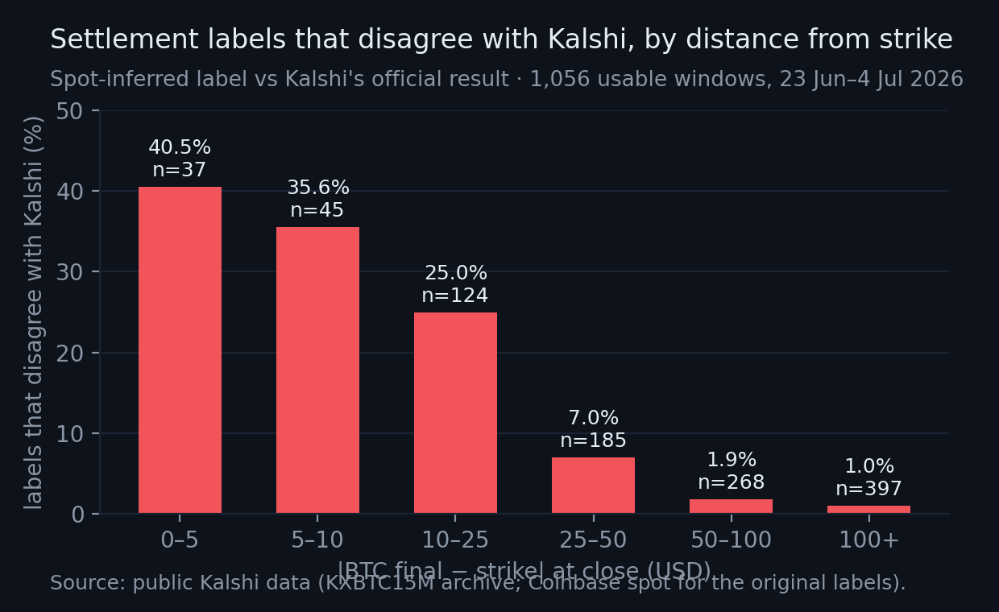
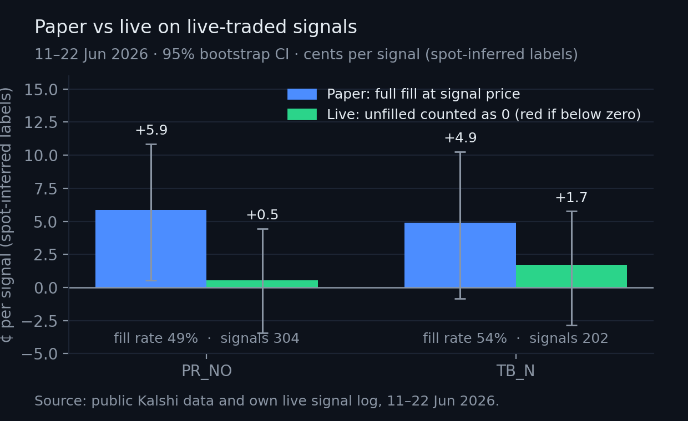

The problem
Each 15-minute market asks whether bitcoin will close above a set price, the strike. Kalshi's official result should decide settlement. My early labels did not come from it. They were inferred from the bitcoin spot price on Coinbase, and the two sources sometimes disagree.
The wrong labels were most often wrong when the price finished close to the strike, which is exactly where several strategies trade. TB_N enters only within 75 USD of the strike, and REV01 only within 15 USD. A wrong label near the strike tells a strategy it won a bet it lost, or the reverse. That is how a weak strategy can look excellent in a backtest. REV01's win rate went from 46.6% under the original labels to 8.2% under Kalshi's results.
The approach
- Collect. Poll public market data (orderbook, trades, market metadata) into a Snapshot and store each day in SQLite. The collector is read-only.
- Trade on paper. Six strategy lanes emit signals. The paper engine assumes a full fill at the signal price.
- Settle two ways. Score every window with the spot-inferred label and with Kalshi's official result.
- Audit before trusting. Check the labels against Kalshi's results first, then compare P&L under both label sets.
- Measure honestly. Report cents per contract with 95% bootstrap intervals over trades, after an assumed fee.
Results
All P&L is in cents per contract. Intervals are 95% bootstrap intervals over trades. The full method and caveats are in the repository's RESULTS.md.
1. Settlement labels disagree with Kalshi on 84 of 1,056 windows
The original rule reproduces btc_final ≥ strike exactly on all 1,056 windows, so the error comes from the price source and not from a coding slip in the rule.
| Distance from strike | Windows | Wrong labels | Error rate |
|---|---|---|---|
| 0–5 USD | 37 | 15 | 40.5% |
| 5–10 USD | 45 | 16 | 35.6% |
| 10–25 USD | 124 | 31 | 25.0% |
| 25–50 USD | 185 | 13 | 7.0% |
| 50–100 USD | 268 | 5 | 1.9% |
| 100+ USD | 397 | 4 | 1.0% |
Within 10 USD of the strike, 31 of 82 windows (38%) are labelled wrong.

2. Per-lane P&L, original versus corrected labels
The same 1,476 paper entries are scored under both label sets. Entries are identical under both; only the settlement outcome changes.
| Lane | Trades | Win rate, original → corrected | Mean entry | Original [95% CI] | Corrected [95% CI] |
|---|---|---|---|---|---|
| REV01 cheap flip | 73 | 46.6% → 8.2% | 13.0¢ | +33.5 [+22.5, +44.8] | −4.8 [−10.5, +2.1] |
| S01 late-window fade | 390 | 36.1% → 25.4% | 26.9¢ | +9.2 [+4.7, +13.7] | −1.5 [−5.4, +2.5] |
| TB_N stale wide crowded | 221 | 82.8% → 76.5% | 75.8¢ | +7.0 [+1.9, +11.8] | +0.7 [−5.0, +6.2] |
| PR_NO 50–70 book | 291 | 66.3% → 63.2% | 60.2¢ | +6.1 [+0.7, +11.5] | +3.0 [−2.5, +8.7] |
| TB_Q midwide YES-heavy fade | 281 | 75.1% → 72.2% | 73.0¢ | +2.1 [−3.2, +7.0] | −0.8 [−6.0, +4.3] |
| TA_L burst wide fade | 220 | 73.6% → 72.3% | 74.5¢ | −0.9 [−6.9, +4.8] | −2.3 [−8.1, +3.6] |
No corrected lane is clearly positive. Every corrected interval includes zero. The largest corrected estimate, PR_NO at +3.0¢, has an interval from −2.5¢ to +8.7¢. REV01 looked strongest under the original labels and is negative once the labels are corrected.

3. After an assumed fee
Fees are a sensitivity check, not a measured cost. The formula comes from secondary sources, and Kalshi's fee schedule for this series was not verified.
| Lane | Gross (¢) | Taker fee (¢) | Net, taker (¢) [95% CI] | Net, maker scenario (¢) |
|---|---|---|---|---|
| REV01 (cheap flip) | −4.8 | 0.8 | −5.6 [−11.3, +1.3] | −5.0 |
| PR_NO (mid-window fade) | +3.0 | 1.6 | +1.4 [−4.1, +7.0] | +2.6 |
| TB_N (mid-window fade) | +0.7 | 1.3 | −0.6 [−6.3, +4.9] | +0.4 |
| TB_Q (mid-window fade) | −0.8 | 1.3 | −2.1 [−7.4, +3.0] | −1.1 |
| TA_L (mid-window fade) | −2.3 | 1.3 | −3.6 [−9.4, +2.3] | −2.6 |
After the assumed fees, no lane is clearly positive. The maker scenario uses 0.0175 × P × (1 − P), also from secondary sources.
4. Paper versus live
Live-traded signals, 11–22 June 2026, de-duplicated by window. The paper figure assumes a full fill at the signal price. The live figure counts unfilled signals as zero.
| Measure | PR_NO 50–70 book | TB_N stale wide |
|---|---|---|
| Signals | 304 | 202 |
| Filled | 150 (49%) | 110 (54%) |
| Paper, cents per signal [CI] | +5.9 [+0.6, +10.8] | +4.9 [−0.8, +10.2] |
| Live, cents per signal, unfilled = 0 [CI] | +0.5 [−3.4, +4.4] | +1.7 [−2.9, +5.8] |
| Mean fill price minus signal price | +0.02¢ | +0.36¢ |
153 of 506 live signals (30%) were cancelled after an API error, and 93 more timed out without filling. Price slippage was small. The paper-to-live gap comes mainly from missed fills.
Adverse selection is a hint, not a conclusion. Signals that filled won less often than signals that did not: PR_NO 58.7% filled versus 71.4% unfilled, and TB_N 78.2% versus 83.7%. The samples are small, and these windows have only the original labels.

Caveats.
- The corrected labels are stored values. They came from Kalshi's result field when the archive was relabelled. The public endpoint now returns HTTP 404 for tickers from that period, so the stored values are the only record.
- Live windows have no Kalshi-verified results. Section 4 uses the original labels.
- The fee formula is from secondary sources. Section 3 is a sensitivity range, not a measured cost.
- Intervals are per trade. Trades on the same window can be correlated across lanes, so the intervals are somewhat optimistic.
- Paper fills are an upper bound. The paper engine fills every entry in full at the signal price. Section 4 shows what that assumption costs.
Journey
- Mar 25, 2026First archived 15-minute window. Setup
- Jun 11, 2026First live fill logged (PR_NO). Milestone
- Jun 11–22, 2026Live trading period: 506 signals across two lanes. About 30% were lost to API cancellations. Setback
- Jun 22, 2026Kalshi results fetched for windows closing from this date onward. Fix
- Jun 23 – Jul 4, 2026Twelve archived days relabelled from Kalshi's results, and the labels audited. The audit found 7.95% of labels wrong. Finding
- Late Aug 2026Research code consolidated into the current package. Milestone
- Aug 30, 2026Last collected day in the archive. Milestone
What I learned
- Check your labels against the venue's own settlement before any backtest. A plausible-looking edge can be a labelling artifact. Here it was.
- Look at the interval, not the headline. All six lanes have fewer than 400 trades, and every corrected interval is wide enough to include zero.
- An observed price is not a fill. Paper assumed every entry filled. Live filled about half, and the signals that did fill won less often (a hint, not proof).
- Keep the evidence. The Kalshi results that corrected the labels can no longer be re-fetched from the public endpoint, so the archive has to be preserved.
How it was built
I designed the strategies, the checks and the review of every result against the raw data. The code was written with AI coding tools (Claude Code).
The repository holds the strategy, audit and P&L code: the models, collector, store, paper engine, labels, six strategy lanes and a replay tool. Omitted: live order execution, signed API requests, credentials, deployment scripts, the dashboard, live collector data and the earlier research history.
To check the method, run python scripts/reproduce.py. It repeats the label and P&L checks on a three-day public sample. The sample is not the headline dataset: on it, the mismatch rate is 5.8% rather than 7.95%, so use the RESULTS.md tables for the figures.